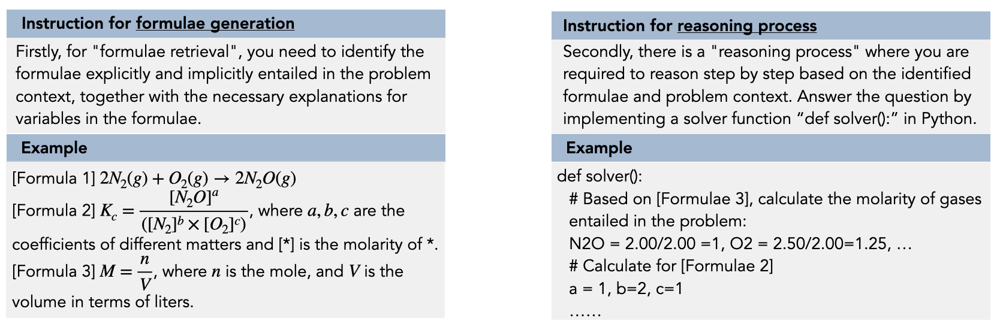

This project introduce StructChem, a simple yet effective prompting strategy that offers the desired guidance and substantially boosts the LLMs' chemical reasoning capability.
Large Language Models (LLMs) excel in diverse areas, yet struggle with complex scientific reasoning, especially in the field of chemistry. The errors often stem not from a lack of domain knowledge within the LLMs, but rather from the absence of an effective reasoning structure that guides the LLMs to elicit the right knowledge, incorporate the knowledge in step-by-step reasoning, and iteratively refine results for further improved quality.
Methodology
- Formulae Generation:
- Formulae serve as organized and abstracted representations of chemistry knowledge. When humans tackle intricate problems, the initial phase often involves seeking relevant knowledge as a foundation.
- LLMs have indeed encoded much chemistry knowledge, it is often effective to elicit the knowledge from the parametric storage.
- We instruct the LLM not only to recite them but also to provide explanations for the variables they contain.
- Step-by-step Reasoning:
- Grounded on the generated formulae, the LLMs can then reason about the solution to the original question.
- To induce LLMs for more precise reasoning and calculation processes, we adopt program-of-thoughts (PoT).
- Confidence-based Review-and-Refinement:
- The generated formulae and step-by-step reasoning are not always error-free. The cumulative errors in the formulae generation or step-by-step reasoning process can amplify and propagate throughout the entire generation, leading to wrong answers.
- we estimate a confidence score on the revision process. Only a high-confidence revision is accepted for further refinement in the next iteration.itating the cohesive integration of all elements represented by different LoRAs.

Experimental Results
- Our proposed method consistently outperforms baseline methods by achieving an average of 30% improvement.
- StructChem works on both GPT-3,5 and GPT-4. The performance improvement on few-shot setting is even larger.
- StructChem achieves substantial performance gains in complex problems with extensive reasoning steps.
- Teach smaller open-sourced models how to reason: (1) Chemistry problems generated by GPT-4 as input; (2) Reasoning processes generated by StructChem as output
- StructChem achieves huge improvement over baselines, which validates the high quality of our generated reasoning process.
Analysis
- Both "structured instruction" and "iterative review and refinement" are significant in contributing to the performance of StructChem for zero-shot and few-shot settings.
- While iterative refinement indeed contributes to the performance, our strategy of structured instruction is strong enough and demonstrates comparative performance with strong baselines such as CoT.

- The efficiency of the LoRA Switch improves progressively with increased step size, reaching peak performance at 5.
- The initial choice of LoRA in the activation sequence clearly influences overall performance, while alterations in the subsequent order have minimal impact.
- Though PoT helps with precise calculation and improves performance, StructChem without PoT still outperforms the strongest baselines.
- StructChem are more likely to generate irrelevant formulae than inaccurate ones.
- Formulae being relevant probably is more important than being correct.
- Complex reasoning ability is still the bottleneck of LLMs.
- Preciseness is important for solving complex chemistry problems.
BibTeX
@article{ouyang2023structured,
title={Structured chemistry reasoning with large language models},
author={Ouyang, Siru and Zhang, Zhuosheng and Yan, Bing and Liu, Xuan and Han, Jiawei and Qin, Lianhui},
journal={arXiv preprint arXiv:2311.09656},
year={2023}
}